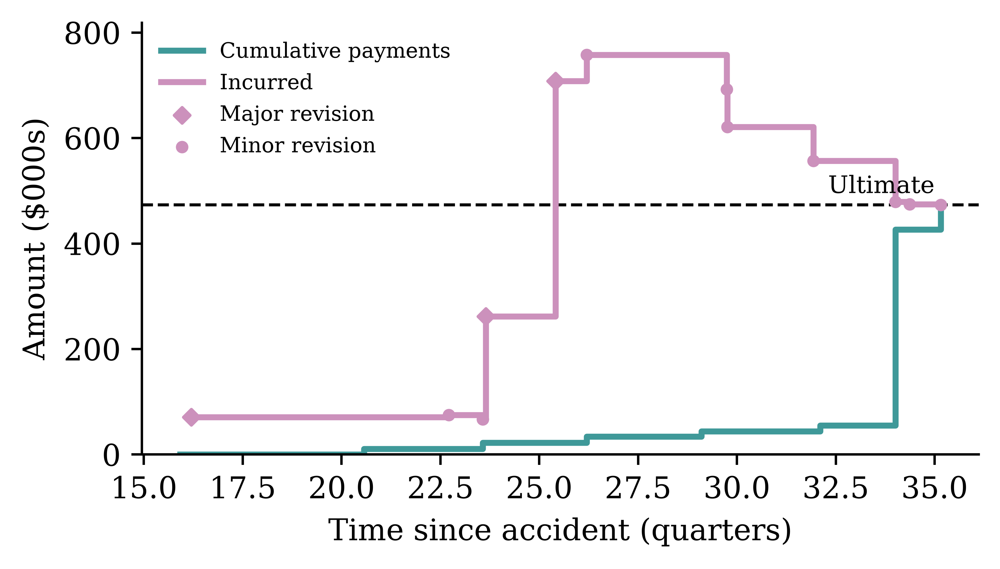
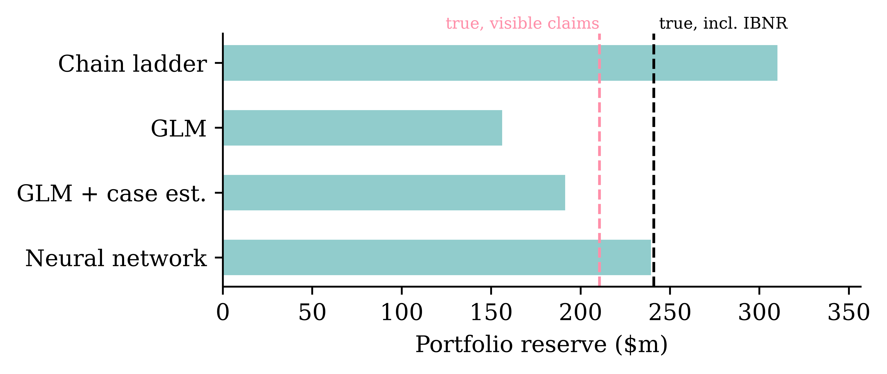

Individual Claim Reserving
ACTL3143 & ACTL5111 Deep Learning for Actuaries
Note
These slides are currently a work in progress. The full/final version will be completed soon.
Introduction
Individual claim reserving
An accident has occurred, the insurer has been notified, and maybe parts of the claim have already been paid, now we need to guess how much remains in this realised claim.

This is potentially a promising application for neural networks.
Ultimate claim size
For claim k, we want to know the ultimate claim size U_k := \sum_{t} Y_{k,t},
This is the sum of all incremental payments Y_{k,t} (also called partial payments) over the complete lifetime of the claim.
NoteAssumption: payments are positive
We assume Y_{k,t} \ge 0 throughout. In reality some payments are negative — called recoveries (e.g. money coming back from a third party or a salvaged vehicle). They are typically so rare and small relative to normal payments that ignoring them is reasonable (though this depends on the dataset).
Outstanding claim amount
Say the valuation date is v, then we’ve seen the history of the claim \mathcal{H}_{k,v} to that time, including past payments.
So the outstanding (future unpaid amount) for claim k is O_k(v) := \sum_{t>v} Y_{k,t}.
If the claim is still ongoing, then we have U_k = \sum_{t \le v} Y_{k,t} + O_k(v) \,.
In words: \text{Ultimate} = \text{Cumulative payments before } v + \text{Outstanding amount from } v \text{ onwards}
Total outstanding
For a portfolio, we’d like to know the total outstanding
T(v) := \sum_{k\in\mathcal{O}(v)} O_k(v) \,, where \mathcal{O}(v) is the set of all open claims at valuation time v.
Note: this doesn’t include incurred but not reported (IBNR) claims.
The total outstanding, visually
Each open claim’s future payments (highlighted) get summed to give T(v).
The bottom claim has occurred before v but hasn’t been notified yet. No individual model can reserve for a claim it cannot see — IBNR needs a separate adjustment.
Why is pricing different from reserving?
- Pricing is prospective and per-policy: no claim exists yet, and we predict the frequency/severity of hypothetical future claims from policy covariates (recall the French motor lectures).
- Reserving is about claims that have already happened: we condition on each claim’s unfolding history — payments to date, case estimates — to predict what is still to be paid.
- Consequence for the ML setup: pricing rows are policies with static features; reserving rows are claim-quarter snapshots with time-varying features. That’s why this lecture needs a whole preprocessing pipeline.
An Individual Claim
The key dates

A claim is open if not yet finalised.
\mathcal{O}(v) := \{ k : d_k^F > v \} \,.
(Though, technically, claims sometimes finalise, and then get reopened with further payments, and refinalised again.)
Series of incremental payments
| Event | Date | Amount |
|---|---|---|
| Accident | 2021-09-30 | |
| Notification | 2021-11-15 | |
| Payment #1 | 2022-05-17 | $9.00 |
| Payment #2 | 2022-08-31 | $2.00 |
| Payment #3 | 2022-10-23 | $2.00 |
| Payment #4 | 2022-12-20 | $4.00 |
| Payment #5 | 2023-02-19 | $2.00 |
| Payment #6 | 2023-05-31 | $3.00 |
| Payment #7 | 2023-07-08 | $18.00 |
| Payment #8 | 2023-09-10 | $8.00 |
| Finalisation | 2023-10-28 |
Case estimates
Alongside payments, the insurer holds a case estimate C_{k,v} \ge 0: a claims assessor’s live, subjective estimate of the outstanding liability at the end of quarter v.
The assessor is aiming for C_{k,v} \approx O_k(v) \,.
The crucial difference: C_{k,v} is known at time v, whereas O_k(v) is only knowable in retrospect, once the claim finalises.
So case estimates play two roles for us:
- a strong predictor to feed into the model, and
- a benchmark to beat (if the model can’t out-predict the assessors, why bother?).
Payments and case estimates together
The same running example claim, now with the assessor’s revisions interleaved. Note the case estimate is a level (the current view of what’s left), not a flow.
| Date | Event | Payment | Case estimate |
|---|---|---|---|
| 2021-11-15 | Notification, initial estimate | $30.00 | |
| 2022-05-17 | Payment #1 | $9.00 | $21.00 |
| 2022-06-20 | Review: worse than hoped | $35.00 | |
| 2022-08-31 | Payment #2 | $2.00 | $33.00 |
| 2022-10-23 | Payment #3 | $2.00 | $31.00 |
| 2022-12-20 | Payment #4 | $4.00 | $27.00 |
| 2023-02-19 | Payment #5 | $2.00 | $25.00 |
| 2023-05-31 | Payment #6 | $3.00 | $22.00 |
| 2023-07-08 | Payment #7 (settlement agreed) | $18.00 | $8.00 |
| 2023-09-10 | Payment #8 | $8.00 | $0.00 |
| 2023-10-28 | Finalisation | $0.00 |
With hindsight: the true outstanding just after Payment #1 was $39, while the assessor’s estimate was $21 — case estimates are informative but not oracles.
From the policyholder’s perspective

Payments step up toward the ultimate. The incurred, which is cumulative payments plus the case estimate of the outstanding, is the assessor’s running view of the ultimate.
From the insurer’s perspective

The same claim upside down: the true outstanding falls to zero as the payments arrive. The outstanding claims liability (OCL) is the assessor’s live forecast of the outstanding, and drops to zero.
Three levels of data visibility
- Individual transaction level: Stores every transaction or other update for every claim. Highest granularity. Often just visible in the insured’s bank statements, or in insurance company’s finance records. Usually considered too granular to be useful for actuaries.
- Individual quarterly summaries: This aggregates all the payments within a quarter (alternatively per month) for each claim. This is what the actuary would see.
- Portfolio quarterly summaries: Aggregates all payments within a quarter (alternatively per month) across all claims. This feeds into a Chain Ladder style of reserving.
Benchmark: Aggregate Reserving
Aggregate reserving
You have seen the classical approach to reserving already. The insurer’s past payments are aggregated into a run-off triangle: rows are accident years, columns are development years, and each cell holds the cumulative amount paid so far.
| Accident Year | Dev 1 | Dev 2 | Dev 3 |
|---|---|---|---|
| 2021 | 100 | 150 | 165 |
| 2022 | 120 | 180 | ? |
| 2023 | 140 | ? | ? |
The lower-right of the triangle is the future: it hasn’t happened yet, and the reserve is our estimate of it.
Chain ladder
Chain ladder fills in the triangle by assuming each accident year develops in the same proportions as the past ones.
- Development factor from Dev 1 to Dev 2: f_1 = \frac{150 + 180}{100 + 120} = 1.5
- Development factor from Dev 2 to Dev 3: f_2 = \frac{165}{150} = 1.1
Projecting forward:
| Accident Year | Dev 1 | Dev 2 | Dev 3 | Reserve |
|---|---|---|---|---|
| 2021 | 100 | 150 | 165 | 0 |
| 2022 | 120 | 180 | 198 | 18 |
| 2023 | 140 | 210 | 231 | 91 |
The total reserve here is 18 + 91 = 109.
What chain ladder ignores
Every claim in the same accident year is treated identically. The triangle has already thrown away:
- who was injured (age, injury severity),
- how the claim is progressing (legal representation, payment pattern),
- the case estimates set by claims assessors.
If two claims have paid out the same amount so far, chain ladder implicitly reserves the same for both — even if one is a minor injury about to settle and the other is heading to court.
Why individual claim reserving?
With claim-level data and machine learning, we can use those discarded covariates to predict each claim’s outstanding amount separately.
- The portfolio reserve is then just a sum: T(v) = \sum_{k \in \mathcal{O}(v)} O_k(v).
- Per-claim predictions are useful beyond the total: claims triage (which claims need senior assessors?), segmenting the reserve by injury severity or legal representation, spotting claims whose case estimates look off.
- Chain ladder remains the benchmark: an individual model that can’t beat the triangle isn’t worth its complexity.
Note
Next week’s guest lecture digs into when and why aggregate models break down, and the trade-offs between micro- and macro-level models. Today we focus on individual-level approach and how to implement it.
Preprocessing One Claim
One claim’s full history
Before any preprocessing: a claim is some static covariates plus a timeline of events. Step through a portfolio of 20 synthetic claims — the same claim is shown on every interactive slide in this lecture.
Noting the quarters
We work in quarters — the standard in actuarial practice. Each event date is binned into its calendar quarter, and we also track the development quarter (quarters since the accident); the exact dates d_k^A, d_k^N, d_k^F are then discarded, keeping only the quarters (A_k, N_k, F_k).
Warning
A side effect of discretising: a claim that opens and closes within a single quarter vanishes from the snapshot dataset entirely.
Quarterly aggregation
All payments within a quarter collapse into one number, Y_{k,t} — including quarters with zero payments, which are kept as rows. Case estimates within a quarter are instead summarised by their latest value (the estimate is a level, not a flow — summing revisions would be meaningless).
Adjusting for inflation
A dollar paid in 2015 is not a dollar paid in 2025. If past payments enter the model in nominal terms, the model must waste capacity learning inflation — and drifts as soon as inflation changes.
- Deflate all dollar amounts to the valuation date using a suitable index (e.g. wage inflation for injury claims, since costs are dominated by wages and care) — here, a synthetic wage price index:
- Fit the model in real dollars; re-inflate predictions afterwards if needed.
Adjusting for inflation, applied
Each of the selected claim’s quarters gets an adjustment factor from the index — turning the nominal quarterly sums into real dollars.
The target, quarter by quarter
For a finalised claim we can compute the outstanding O_k(v) retrospectively at every quarter v it was open — these become the labels.
From history to features
Everything known about claim k at valuation quarter v: \mathcal{H}_{k,v} := \left\{A_k, N_k, (Z_{k,t})_{t\le v},\ (Y_{k,t})_{t\le v},\ (C_{k,t})_{t\le v}\right\}
Some covariates Z_{k,t} are static (age at accident, injury severity), others are time-varying (legal representation can switch on mid-claim).
Problem: this history has a different length for every (k, v). Neural networks (the tabular kind we know) want a fixed-length vector.
The preprocessing pipeline is a deterministic map X_{k,v} := \Phi(\mathcal{H}_{k,v}) \in \mathbb{R}^p .
Two kinds of time-varying covariates
When \Phi compresses the history, the time-varying covariates split into two kinds:
- Only the latest value matters. E.g. legal representation status, or the current case estimate: keep Z_{k,v}, discard the path. (Implicitly a Markov-style assumption: the current state is a sufficient summary.)
- The path matters. E.g. the payments-per-quarter series: a claim that paid $40 in one early lump differs from one that dribbled out $10 four times. These get summarised as functions of the whole history — they are path-dependent features.
Deciding which kind each covariate is is itself a modelling choice: treating the case estimate as “latest value only” throws away how often the assessor has revised it.
Summarising the payment history
How does \Phi compress a variable-length payment history into fixed columns? Summary statistics:
- development quarter v - A_k, notification delay N_k - A_k,
- count / sum / mean / std / min / max of past payments,
- the latest case estimate,
- current values of the time-varying covariates,
- the static covariates unchanged.
Alternative: let an RNN read the history
The claim history is naturally a sequence — one vector per development quarter: \bigl( Y_{k,t},\ C_{k,t},\ Z_{k,t} \bigr) \quad \text{for } t = N_k, \dots, v .
So instead of hand-crafting summary statistics, we could (recall Week 4):
- feed the quarter-by-quarter vectors into a recurrent layer (e.g. GRU/LSTM),
- take the final hidden state as a learned summary of the history — a trainable replacement for \Phi’s count/sum/mean/etc.,
- concatenate the static covariates, and predict O_k(v) with a dense head.
Preparing features for a neural network
The second half of \Phi is the standard tabular recipe from earlier weeks:
log1ptransform dollar amounts (heavy tails!),- one-hot encode categoricals (age band, injury severity, legal representation),
- min–max scale numeric columns.
Creating claim snapshots

One finalised claim, viewed retrospectively from every quarter it was open, yields one training row per quarter: (X_{k,v},\ O_k(v)) \quad \text{for } v = N_k, \dots, F_k - 1 .
So a claim that took F_k - N_k quarters to settle contributes F_k - N_k rows. The full supervised dataset is \mathcal{D} := \{(X_{k,v}, O_k(v)) : k \in \mathcal{I},\ v = N_k, \dots, F_k - 1\}.
Creating claim snapshots
The animated build of the same idea: one snapshot row per development quarter, each pairing features X_{k,v} with the target O_k(v).
Splitting Claims into Datasets
A portfolio of claims over time

Now zoom out from one claim to the whole portfolio. Every claim needs to be allocated to train, validation, or test — but claims overlap in time, so the familiar shuffled random split deserves suspicion.
Two natural ways to split claims in time
Claims have two anchor dates you could split on:
- by notification quarter: a claim belongs to the era in which it arrived, or
- by finalisation quarter: a claim belongs to the era in which it completed.
Both are sensible-looking temporal splits (the interactive demo shows both). But they differ in one important way: under a notification split, the training set contains claims that are still open at the end of the training window — and for those, we don’t know the true outstanding.
Exploring the splits
The trouble with splitting by notification
For an in-progress claim, we haven’t yet seen the target, we only know the bound: U_k \ge \sum_{t \le v} Y_{k,t} \,, i.e. the ultimate is at least what’s been paid so far. This is a censored observation (the survival-analysis kind).
You could still train on these rows: add a loss term that penalises predictions of the ultimate below the payments made to date.
It’s simpler if we predict the outstanding
We chose to predict the outstanding O_k(v) rather than the ultimate U_k directly.
- For a censored row, the bound U_k \ge \text{paid so far} translates to just O_k(v) \ge 0.
- Any sensible model of the outstanding would only predicts positive values.
- So the censored observations impose a constraint the model satisfies by construction, they carry no usable information.
So we predict the outstanding, split by finalisation quarter, and train only on fully-observed claims.
Train / validation / test splits
Split claims by their finalisation quarter:

Why split by claim, not by row?
One claim generates F_k - N_k snapshot rows, and consecutive snapshots of the same claim are near-duplicates (the history only grows by one quarter).
If we randomly shuffled rows into train/val/test, almost every test row would have a sibling in the training set. The model could just memorise claims — validation scores would look brilliant, deployment would disappoint.
So: all snapshots from one claim go to the same set. Splitting by finalisation quarter guarantees this, and keeps time flowing in one direction too.
Censoring at the observation date
Claims still open at the end of the data window are right-censored: we can see their history, but not their target O_k(v) (the future payments haven’t happened yet).
- They can’t be used for training or testing as their label is unknown.
- But they are precisely the claims we need predictions for in deployment! They form the unfinalised set.
Case Study: Synthetic Claims
Imports for the case study
The R side simulates the data and runs the classical benchmark:
library(SPLICE) # synthetic claims with case estimates
library(ChainLadder) # the classical benchmark
library(arrow) # parquet files: handing data from R to PythonThe Python side does the machine learning:
import numpy as np
import pandas as pd
from sklearn.compose import ColumnTransformer
from sklearn.linear_model import Ridge
from sklearn.metrics import root_mean_squared_error
from sklearn.pipeline import make_pipeline
from sklearn.preprocessing import (FunctionTransformer, MinMaxScaler,
OneHotEncoder)
from keras.models import Sequential
from keras.layers import Dense
from keras.callbacks import EarlyStoppingGenerating synthetic claims with SPLICE
SynthETIC (Avanzi et al., 2021) generates the claims and payments; SPLICE (Avanzi et al., 2023) adds the case estimates; the claim-level covariates plug in via SynthETIC’s covariates module.
# Verbatim copy of the chunk that actually runs, hoisted to the setup block at
# the top of this file so it executes before the earlier slides read the
# parquet (see the comment there — rewriting an already-read parquet mid-render
# corrupts later reads). eval: false here purely to avoid writing them twice.
sim <- generate_data(
n_claims_per_period = 100, # ~4,000 claims in total
n_periods = 40, # 40 quarters = 10 accident years
complexity = 5, # the most realistic scenario
random_seed = 20260712, # fully reproducible across sessions
covariates_obj = SynthETIC::test_covariates_obj
)
claims <- cbind(sim$claim_dataset, sim$covariates_data$data)
write_parquet(claims, "data/splice/claims.parquet")
write_parquet(sim$payment_dataset, "data/splice/payments.parquet")
write_parquet(sim$incurred_dataset, "data/splice/estimates.parquet")Three tables: one row per claim, per payment, and per case estimate transaction.
One synthetic claim’s payments
One claim’s payments (note the paired nominal/deflated columns):
payments[payments["claim_no"] == 1][["pmt_no", "payment_time", "payment_period", "payment_size", "payment_inflated"]]| pmt_no | payment_time | payment_period | payment_size | payment_inflated | |
|---|---|---|---|---|---|
| 0 | 1.0 | 3.062821 | 4.0 | 6432.827392 | 7888.576867 |
| 1 | 2.0 | 7.534395 | 8.0 | 5942.159392 | 9814.951351 |
One synthetic claim’s case estimates
Its case estimate transactions (OCL is the case estimate):
estimates[estimates["claim_no"] == 1][["txn_time", "txn_type", "cumpaid", "OCL"]]| txn_time | txn_type | cumpaid | OCL | |
|---|---|---|---|---|
| 0 | 0.862753 | Ma | 0.000000 | 21627.603600 |
| 1 | 3.062821 | PMi | 7888.576867 | 13397.618653 |
| 2 | 6.049107 | Mi | 7888.576867 | 10543.927822 |
| 3 | 7.534395 | PMi | 17703.528218 | 0.000000 |
The package shows payments as both a nominal (payment_inflated) and a deflated (payment_size) amount, and we model the deflated ones. The case estimates are revised at irregular times, just like the toy table earlier — though note they are tracked in nominal dollars (assessors think in the money of the day).
From transactions to snapshot rows
Bin each claim’s key dates into quarters, and sort the claims into groups:
T_END = 40 # the valuation quarter (end of the observation window)
claims["notif_qtr"] = np.ceil(claims["occurrence_time"] + claims["notidel"]).astype(int)
claims["final_qtr"] = np.ceil(claims["occurrence_time"] + claims["notidel"] + claims["setldel"]).astype(int)
notif, final = claims["notif_qtr"], claims["final_qtr"]
ibnr = notif > T_END
unfinalised = (notif <= T_END) & (final > T_END)
flash = (final <= T_END) & (final == notif)
observed = claims[(final <= T_END) & (final > notif)]4,027 claims: 2,739 finalised & usable, 880 unfinalised, 232 IBNR, 176 settled within a quarterEvery category from the theory shows up in the counts.
The simulator produced genuine IBNR claims — occurred but not yet notified at the valuation date, so we must discard them, just as reality hides them from the insurer. And some claims open and close within a single quarter, so they vanish under the quarterly discretisation, exactly as the earlier callout warned.
Building the snapshot grid
One row per claim per open quarter, with the quarterly payments Y_{k,t} merged in (missing quarters become zero-payment rows). The merge/groupby plumbing is routine (code folded away); what matters is the change of shape:
Code
n_snapshots = (observed["final_qtr"] - observed["notif_qtr"]).to_numpy()
grid = observed.loc[observed.index.repeat(n_snapshots),
["claim_no", "occurrence_period", "notif_qtr", "final_qtr", "notidel",
"Legal Representation", "Injury Severity", "Age of Claimant"]].copy()
grid["quarter"] = grid["notif_qtr"] + grid.groupby("claim_no").cumcount()
quarterly = (payments.rename(columns={"payment_period": "quarter"})
.groupby(["claim_no", "quarter"])["payment_size"]
.sum().rename("Incremental").reset_index())
grid = grid.merge(quarterly, on=["claim_no", "quarter"], how="left")
grid["Incremental"] = grid["Incremental"].fillna(0.0)Before — one row per claim:
| claim_no | notif_qtr | final_qtr | |
|---|---|---|---|
| 0 | 1 | 1 | 8 |
| 1 | 2 | 1 | 4 |
| 2 | 3 | 7 | 12 |
After — one row per claim per open quarter:
| claim_no | quarter | Incremental | |
|---|---|---|---|
| 0 | 1 | 1 | 0.00 |
| 1 | 1 | 2 | 0.00 |
| 2 | 1 | 3 | 0.00 |
| 3 | 1 | 4 | 6432.83 |
| 4 | 1 | 5 | 0.00 |
| 5 | 1 | 6 | 0.00 |
History summaries, case estimates, and the target
Onto that grid we add the path-dependent features (expanding summaries of the payment history), the current-state features (latest case estimate, forward-filled between revisions), and the target (code folded away):
Code
g = grid.groupby("claim_no")["Incremental"]
grid["count_Incremental"] = ((grid["Incremental"] > 0)
.groupby(grid["claim_no"]).cumsum())
grid["sum_Incremental"] = g.cumsum()
for stat in ["mean", "std", "min", "max"]:
grid[f"{stat}_Incremental"] = g.expanding().agg(stat).to_numpy()
grid["std_Incremental"] = grid["std_Incremental"].fillna(0.0)
ultimate = payments.groupby("claim_no")["payment_size"].sum()
grid["Outstanding"] = grid["claim_no"].map(ultimate) - grid["sum_Incremental"]
grid["development_period"] = grid["quarter"] - grid["occurrence_period"] + 1Code
estimates["quarter"] = np.ceil(estimates["txn_time"]).astype(int)
latest = (estimates.sort_values("txn_time")
.groupby(["claim_no", "quarter"])["OCL"].last()
.rename("Estimate").reset_index())
grid = grid.merge(latest, on=["claim_no", "quarter"], how="left")
grid["Estimate"] = grid.groupby("claim_no")["Estimate"].ffill()Before — one claim’s rows:
| quarter | Incremental | |
|---|---|---|
| 0 | 1 | 0.00 |
| 1 | 2 | 0.00 |
| 2 | 3 | 0.00 |
| 3 | 4 | 6432.83 |
| 4 | 5 | 0.00 |
After — summaries, estimate, and the label O_k(v):
| quarter | sum_Incremental | Estimate | Outstanding | |
|---|---|---|---|---|
| 0 | 1 | 0.00 | 21627.60 | 12374.99 |
| 1 | 2 | 0.00 | 21627.60 | 12374.99 |
| 2 | 3 | 0.00 | 21627.60 | 12374.99 |
| 3 | 4 | 6432.83 | 13397.62 | 5942.16 |
| 4 | 5 | 6432.83 | 13397.62 | 5942.16 |
The dataset after preprocessing
grid[["claim_no", "quarter", "development_period", "Incremental",
"sum_Incremental", "Estimate", "Outstanding"]].head(8)| claim_no | quarter | development_period | Incremental | sum_Incremental | Estimate | Outstanding | |
|---|---|---|---|---|---|---|---|
| 0 | 1 | 1 | 1.0 | 0.0 | 0.000000 | 21627.603600 | 12374.986784 |
| 1 | 1 | 2 | 2.0 | 0.0 | 0.000000 | 21627.603600 | 12374.986784 |
| 2 | 1 | 3 | 3.0 | 0.0 | 0.000000 | 21627.603600 | 12374.986784 |
| … | … | … | … | … | … | … | … |
| 5 | 1 | 6 | 6.0 | 0.0 | 6432.827392 | 13397.618653 | 5942.159392 |
| 6 | 1 | 7 | 7.0 | 0.0 | 6432.827392 | 10543.927822 | 5942.159392 |
| 7 | 2 | 1 | 1.0 | 0.0 | 0.000000 | 13166.230696 | 15482.268370 |
8 rows × 7 columns
Splitting by finalisation quarter
T_TRAIN, T_VAL = 28, 34
splits = {
"train": grid[grid["final_qtr"] <= T_TRAIN],
"val": grid[(grid["final_qtr"] > T_TRAIN) & (grid["final_qtr"] <= T_VAL)],
"test": grid[grid["final_qtr"] > T_VAL],
}train 10,247 rows 1,623 claims (finalisation quarters 2..28)
val 4,892 rows 564 claims (finalisation quarters 29..34)
test 4,925 rows 552 claims (finalisation quarters 35..40)Note rows \gg claims: each claim contributes one row per quarter it was open — and every one of a claim’s rows lands in the same set.
Benchmark: chain ladder
payments <- read_parquet("data/splice/payments.parquet")
observed <- subset(payments, payment_period <= 40)
observed$acc_year <- ceiling(observed$occurrence_period / 4)
observed$dev_year <- ceiling(observed$payment_period / 4) -
observed$acc_year + 1
incr <- aggregate(payment_size ~ acc_year + dev_year, observed, sum)
tri <- incr2cum(as.triangle(incr, origin = "acc_year",
dev = "dev_year", value = "payment_size"))
round(tri / 1e6, 2) # cumulative payments, $m dev_year
acc_year 1 2 3 4 5 6 7 8 9 10
1 0.87 7.75 21.99 34.85 41.05 48.61 54.12 57.59 61.45 67.32
2 0.71 6.81 16.56 29.23 37.55 47.37 53.38 57.58 61.23 NA
3 0.99 12.30 22.76 32.83 41.82 48.04 53.12 55.35 NA NA
4 1.05 10.47 31.63 51.14 65.89 74.55 77.70 NA NA NA
5 1.60 9.62 24.34 34.56 41.04 45.21 NA NA NA NA
6 1.25 10.20 27.44 38.69 49.10 NA NA NA NA NA
7 0.85 11.08 24.99 39.18 NA NA NA NA NA NA
8 0.75 9.31 21.64 NA NA NA NA NA NA NA
9 1.14 9.46 NA NA NA NA NA NA NA NA
10 1.32 NA NA NA NA NA NA NA NA NAThe chain ladder reserve
mack <- MackChainLadder(tri, est.sigma = "Mack")
reserve_cl <- summary(mack)$Totals["IBNR:", ]
true_outstanding <- sum(subset(payments, payment_period > 40)$payment_size)
cat(sprintf("Chain ladder reserve: $%.1fm\n", reserve_cl / 1e6),
sprintf("True total outstanding: $%.1fm\n", true_outstanding / 1e6))Chain ladder reserve: $310.0m
True total outstanding: $241.0mAs this is synthetic data, we know the future and can compare against the true value.
A baseline model: GLM
Before any neural network: ridge regression on the log outstanding, with the standard tabular recipe as an sklearn pipeline.
dollar_cols = ["Incremental", "sum_Incremental", "mean_Incremental",
"std_Incremental", "min_Incremental", "max_Incremental"]
numeric_cols = ["development_period", "notidel", "count_Incremental"]
cat_cols = ["Legal Representation", "Injury Severity", "Age of Claimant"]
def make_glm(with_estimate):
dollars = dollar_cols + (["Estimate"] if with_estimate else [])
preprocess = ColumnTransformer([
("dollars", make_pipeline(FunctionTransformer(np.log1p),
MinMaxScaler()), dollars),
("numeric", MinMaxScaler(), numeric_cols),
("categorical", OneHotEncoder(drop="first", sparse_output=False),
cat_cols),
])
return make_pipeline(preprocess, Ridge(alpha=1e-4))Two versions: without and with the case estimate as a feature.
How do the GLMs do?
X_train, X_test = splits["train"], splits["test"]
y_train = np.log1p(X_train["Outstanding"])
y_test = np.log1p(X_test["Outstanding"])
glms = {}
for with_est in [False, True]:
name = f"GLM {'with' if with_est else 'without'} case estimates"
glms[name] = make_glm(with_est).fit(X_train, y_train)
rmse = root_mean_squared_error(y_test, glms[name].predict(X_test))
print(f"{name}: test RMSE (log scale) = {rmse:.3f}")GLM without case estimates: test RMSE (log scale) = 1.318
GLM with case estimates: test RMSE (log scale) = 1.306rmse_ce = root_mean_squared_error(y_test, np.log1p(X_test["Estimate"]))
print(f"Case estimate alone: test RMSE (log scale) = {rmse_ce:.3f}")Case estimate alone: test RMSE (log scale) = 1.713Two questions for the printed numbers: does the model beat the assessors’ estimates? Does giving it the case estimates help?
On this synthetic portfolio, even a simple GLM on the payment history beats using the case estimates directly, and adding the case estimates as a feature changes little — the payment history already carries most of the signal here. On real data, assessors know things the payment stream doesn’t, and this feature tends to matter much more.
Fitting a neural network
Swap the ridge regression for a small dense network — same features, same target:
preprocess = make_glm(with_estimate=True)[:-1] # the same recipe, minus the Ridge
X_train_nn = preprocess.fit_transform(X_train)
X_val_nn = preprocess.transform(splits["val"])
y_val = np.log1p(splits["val"]["Outstanding"])
nn = Sequential([
Dense(30, activation="leaky_relu"),
Dense(30, activation="leaky_relu"),
Dense(1)])
nn.compile(optimizer="adam", loss="mse")
es = EarlyStopping(patience=10, restore_best_weights=True)
hist = nn.fit(X_train_nn, y_train, epochs=100,
validation_data=(X_val_nn, y_val), callbacks=[es], verbose=0)The validation set finally earns its keep: early stopping monitors the validation loss, and our careful split by finalisation quarter is what makes that loss trustworthy.
The paper’s version of this model predicts a whole distribution for each claim’s outstanding (recall the distributional regression week); a point estimate of the log outstanding is enough for today’s comparisons.
Evaluating the models
All three models on the test set, against the benchmark-to-beat:
X_test_nn = preprocess.transform(X_test)
preds = {name: glm.predict(X_test) for name, glm in glms.items()}
preds["Neural network"] = nn.predict(X_test_nn, verbose=0).flatten()
preds["Case estimates alone"] = np.log1p(X_test["Estimate"])
for name, pred in preds.items():
rmse = root_mean_squared_error(y_test, pred)
print(f"{name:28s} test RMSE (log scale) = {rmse:.3f}")GLM without case estimates test RMSE (log scale) = 1.318
GLM with case estimates test RMSE (log scale) = 1.306
Neural network test RMSE (log scale) = 1.161
Case estimates alone test RMSE (log scale) = 1.713Per-snapshot accuracy is one lens — but a reserving model’s real job is the portfolio total, coming up next.
Predicted vs actual outstanding

Each point is one test-set snapshot (X_{k,v}, O_k(v)), plotted on the model’s log scale; the dashed diagonal is perfect prediction.
From per-claim predictions to the reserve
This is the whole point of individual reserving: predict \widehat{O}_k(v) for every claim still open at the valuation date, and sum them to get \widehat{T}(v).
With one feature row per open claim (X_open, built by the same pipeline):
reserves = {"Chain ladder": float(r.reserve_cl)} # reticulate's R bridge
for name, glm in glms.items():
reserves[name] = np.expm1(glm.predict(X_open)).sum()
reserves["Neural network"] = float(np.expm1(
nn.predict(preprocess.transform(X_open), verbose=0)).sum())The portfolio reserves compared

The individual models can only reserve for claims they can see, so their fair target is the lower line; the chain ladder triangle implicitly projects the IBNR claims too, so its target is the upper one.
Wrapping Up
Individual vs aggregate reserving
- Aggregate (chain ladder on triangles): simple, stable, industry standard; but throws away claim-level covariates and gives no per-claim view.
- Individual: predicts O_k(v) per open claim; the portfolio reserve is just the sum T(v); supports triage and segmentation; per-claim errors partially cancel in the aggregate.
- Individual level reserving is a data engineering headache, and the total still misses IBNR, so an individual model alone is not yet a full portfolio reserve.
What we didn’t cover
- IBNR: our model only reserves claims it can see; incurred-but-not-reported claims need a separate (usually aggregate) adjustment.
- Uncertainty: a reserve needs a risk margin, not just a point estimate; distributional forecasts and ensembling give prediction intervals.
- When does granular beat aggregate?
References
Avanzi, B., Taylor, G., & Wang, M. (2023). SPLICE: A synthetic paid loss and incurred cost experience simulator. Annals of Actuarial Science, 17(1), 7–35. https://doi.org/10.1017/S1748499522000057
Avanzi, B., Taylor, G., Wang, M., & Wong, B. (2021). SynthETIC: An individual insurance claim simulator with feature control. Insurance: Mathematics and Economics, 100, 296–308. https://doi.org/10.1016/j.insmatheco.2021.06.004